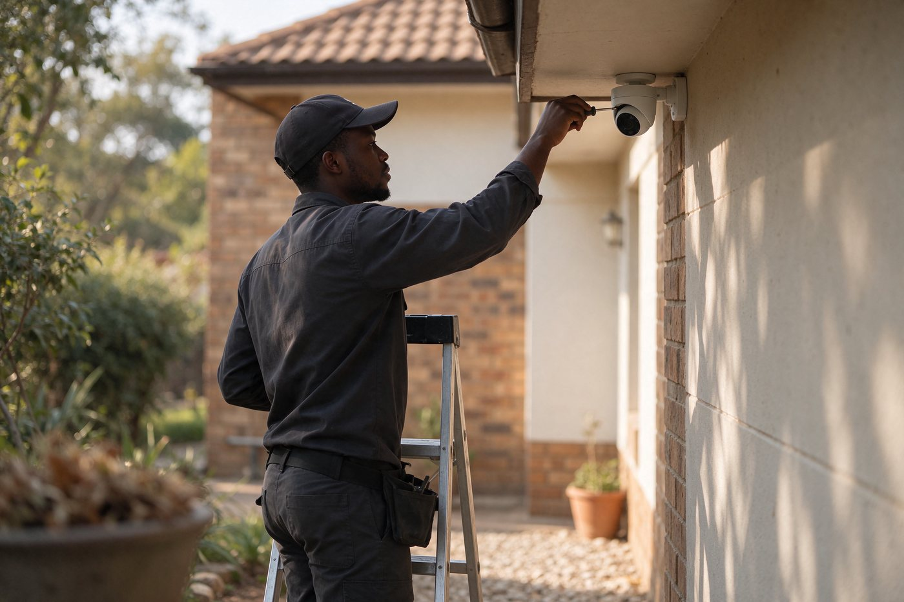

01
CCTV camera installation
Installation of CCTV cameras for homes, businesses and properties. Tell us about your site and the areas you would like covered.
Ask about CCTV installation ↗01Drainage · CCTV installation · Plumbing
From a stubborn blockage to a recurring drain problem, Mac Drains helps you understand what is going on and choose the right next step.
✓ A real person. A practical next step. No guesswork about what to ask for.
See the line.
Understand the issue.
Plan the right work.
More than a quick unblock
From a recurring drain issue to CCTV camera installation for your property, Mac Drains brings drainage, plumbing and installation services together. Tell us what you need and we’ll help you find the right next step.
See how we work ↗Drainage & plumbing services
Not sure which service fits? Describe what you see—slow drains, gurgling, smells, leaks or repeat blockages—and we’ll help you start in the right place.
Installation of CCTV cameras for homes, businesses and properties. Tell us about your site and the areas you would like covered.
Ask about CCTV installation ↗01Water jetting can help clear stubborn buildup and clean drain lines. We’ll discuss the line and the job before recommending a method.
Ask about jetting ↗Clear accumulated debris and help restore flow in drains and sewer lines, with the cleaning approach matched to the issue.
Ask about cleaning ↗Help for slow sinks, backed-up toilets, overflowing manholes and drainage lines that need attention.
Tell us what’s blocked ↗Practical help with leaking pipes and taps, toilets, basins, sinks and fittings. If an inspection shows a damaged sewer line, we can discuss repair options.
Ask about a repair ↗Planned cleaning and checks for homes, businesses and properties dealing with repeat drain issues.
Discuss maintenance ↗Cleaning support for homes, yards and business premises, including tidy-up after drainage or plumbing work.
Email about cleaning ↗Not sure what you need?
Tell us where it is, what is happening and how long it has been going on.
Describe the problem ↗Service photos are illustrative. The right method depends on the pipe, access and what the inspection shows; we’ll talk through the next step with you.
CCTV camera installation
Mac Drains installs CCTV cameras for homes, businesses and properties. Tell us about the site and the areas you want covered, and the team can discuss the installation with you.
Ask about CCTV installation ↗
A simple process
No long form to fill in. Start with a call or WhatsApp message and we’ll help you explain the job.
Share the affected drain or fixture, your area and whether the issue is urgent.
We’ll ask a few useful questions and talk through inspection, cleaning or repair options.
Once the job is understood, we can discuss what is involved and what happens next.
Tell us your location
Mac Drains is based in Bulawayo and works with homes, businesses and properties. Service availability depends on your location and the job—message us with your town or suburb and we’ll confirm.
Check your area on WhatsApp ↗Helpful before you call
If you’re unsure, send us a photo or voice note and describe what you’ve noticed.
Yes. Mac Drains offers CCTV camera installation. Tell us about the property and which areas you would like covered so the team can discuss the job.
Jetting uses pressurised water to help clear certain buildup and debris. It isn’t the right choice for every line, so the pipe and problem should be discussed first.
Yes—tell us it is recurring and which drains are affected. We can talk through suitable drain cleaning and other next steps.
Yes. Mac Drains also handles plumbing repairs such as leaking taps and pipes, toilets, sinks, basins and fittings.
Your town or suburb, the affected drain or fixture, how long it has been happening and a photo or short video if it is safe to take one. Please don’t enter a manhole or touch contaminated water.
Mac Drains is based in Bulawayo. Send your town or suburb and we’ll confirm whether service is available for your job.
Get in touch
Call for urgent drain problems, or message us with a photo, voice note or short description. We’ll help you work out a practical next step.